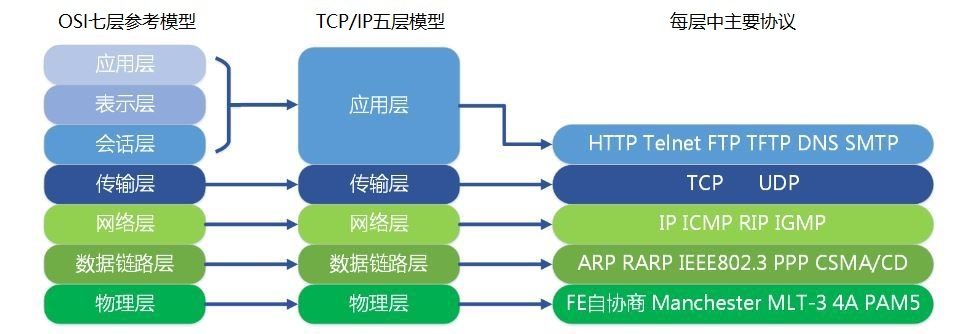
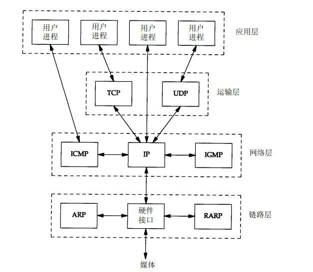
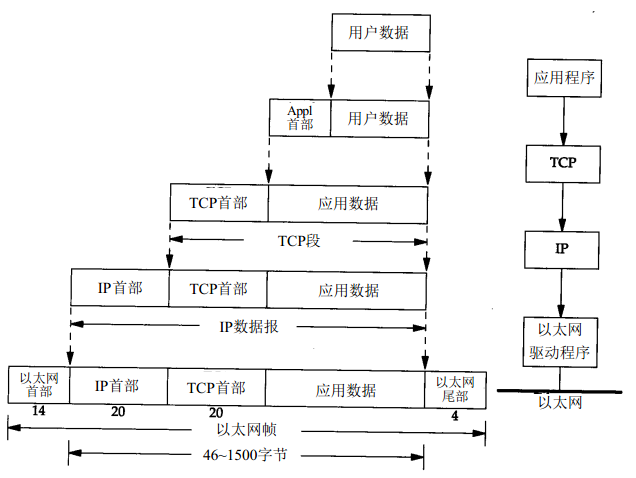
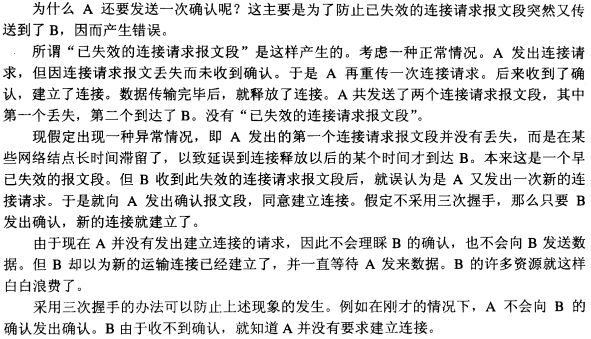
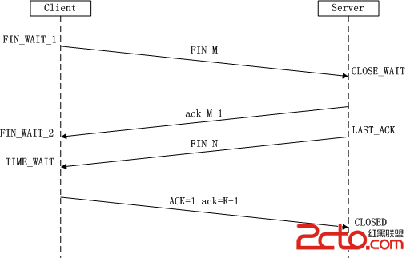

（1）TCP/IP的分层结构

1）链路层（数据链路层或网络接口层），通常包括操作系统中的设备驱动程序和计算机中对应的网络接口卡。
2）网络层（互联网层），处理分组在网络中的活动。
3）运输层，主要负责两台主机上的应用程序提供端到端的同信。（TCP(传输控制协议）UDP（用户数据包协议）。
4）应用层，主要负责处理特定的应用程序细节。大部分TCP/IP实现都会提供以下通用程序：
Telnet远程登陆
FTP文件传输协议
SMTP简单邮件传送协议
SNMP简单网络管理协议
（2）各层的主要协议

- TCP和UDP是两种最为著名的运输层协议，二者都使用IP作为网络层协议
TCP使用不可靠的IP服务，但是却提供一种可靠的运输层服务
UDP为应用程序发送和接收数据报。UDP是不可靠的，它不能保证数据报能安全无误的达到目的地。
IP（网际协议）是网络层上的主要协议，同时被TCP和UDP使用。TCP和UDP的每组数据都通过端系统和每个中间路由器中的IP层在互联网中进行传输。
ICMP(internet控制报文协议）是IP协议的附属协议。IP层用它来与其他主机或路由器交换错误报文和其他重要信息。
IGMP（internet组管理协议）它用来把一个UDP数据多播到多个主机。
ARP(地址解析协议）和RARP（逆地址解析协议）是网络接口使用的特殊协议，用来转换IP层和网络接口层使用的地址。
（3）数据封装

当应用程序用TCP传送数据时，数据被送入协议栈中，然后逐个通过每一层，直接到当作一串比特流送入网络。其中每一层对收到的数据都要加一些首部信息（有时还要增加尾部信息）
- TCP传给IP的数据单元称作TCP报文段(segment)
- IP传给链路层的数据单元称作IP数据报(IP datagram)
- 通过以太网传输的比特流称作帧（Frame)
（4）TCP三次握手与四次挥手
两个序号和六个标志位：
（1）序号：seq序号，占32位，用来标识从TCP源端向目的端发送的字节流，发起方发送数据时对此进行标记。
（2）确认序号：ack序号，占32位，只有ACK标志位为1时，确认序号字段才有效，ack=seq+1。
（3）标志位：共6个，即URG、ACK、PSH、RST、SYN、FIN等，具体含义如下：
（A）URG：紧急指针（urgent pointer）有效。
（B）ACK：确认序号有效。
（C）PSH：接收方应该尽快将这个报文交给应用层。
（D）RST：重置连接。
（E）SYN：发起一个新连接。
（F）FIN：释放一个连接。
需要注意的是：
（A）不要将确认序号ack与标志位中的ACK搞混了。
（B）确认方ack=发起方req+1，两端配对。

① 在第一次消息发送中，A随机选取一个序列号作为自己的初始序号发送给B；
② 第二次消息B使用ack对A的数据包进行确认，因为已经收到了序列号为x的数据包，准备接收序列号为x+1的包，所以ack=x+1，同时B告诉A自己的初始序列号，就是seq=y；
③ 第三条消息A告诉B收到了B的确认消息并准备建立连接，A自己此条消息的序列号是x+1，所以seq=x+1，而ack=y+1是表示A正准备接收B序列号为y+1的数据包。

四次挥手：
由于TCP连接时全双工的，因此，每个方向都必须要单独进行关闭，这一原则是当一方完成数据发送任务后，发送一个FIN来终止这一方向的连接，收到一个FIN只是意味着这一方向上没有数据流动了，即不会再收到数据了，但是在这个TCP连接上仍然能够发送数据，直到这一方向也发送了FIN。
首先进行关闭的一方将执行主动关闭，而另一方则执行被动关闭，上图描述的即是如此。
（1）第一次挥手：Client发送一个FIN，用来关闭Client到Server的数据传送，Client进入FIN_WAIT_1状态。
（2）第二次挥手：Server收到FIN后，发送一个ACK给Client，确认序号为收到序号+1（与SYN相同，一个FIN占用一个序号），Server进入CLOSE_WAIT状态。
（3）第三次挥手：Server发送一个FIN，用来关闭Server到Client的数据传送，Server进入LAST_ACK状态。
（4）第四次挥手：Client收到FIN后，Client进入TIME_WAIT状态，接着发送一个ACK给Server，确认序号为收到序号+1，Server进入CLOSED状态，完成四次挥手

为什么建立连接是三次握手，而关闭连接却是四次挥手呢？
这是因为服务端在LISTEN状态下，收到建立连接请求的SYN报文后，把ACK和SYN放在一个报文里发送给客户端。而关闭连接时，收到对方的FIN报文时，仅仅表示对方不再发送数据了但是还能接收数据，己方也未必全部数据都发送给对方了，所以己方可以立即close，也可以发送一些数据给对方后，再发送FIN报文给对方来表示同意现在关闭连接，因此，己方ACK和FIN一般都会分开发送。
为什么TIME_WAIT状态需要经过2MSL(最大报文段生存时间)才能返回到CLOSE状态？
不应该是为了防止B发送的FIN=1的包的丢失，因为如果A没有收到来自B的释放连接请求，是不会进入TIME-WAIT状态的。所以正确的解释是：A发送的确认释放连接信息B没有收到，这时候B会再次发送一个FIN=1的释放连接请求，而这个时候A还处于TIME-WAIT，所以可以再次发送确认信息